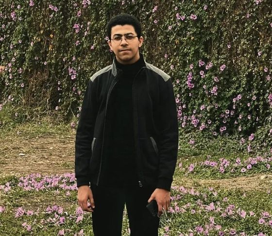

✦ A MIND IN CONSTANT EXPANSION
ADEL GALAL
AI student at Menofia University. I build projects in C++ and Python.
Curiosity is
the engine.
Not everything
needs a label.

UNKNOWN / 001A THOUGHT TAKES FORM“The world is bigger
than its interface.”
Not a single
dimension.
I’m Adel — an Artificial Intelligence student, developer, creator, and explorer. I’m drawn to the space where logic meets imagination: building things, breaking ideas apart, and discovering what could exist beyond the obvious.
Code is one language I speak. Curiosity is the system running underneath it all.
FOLLOW THE SIGNAL ↗ DOWNLOAD CV ↓One step
at a time.
Studying AI, and learning from real work along the way.
Menofia University
Second-year student. Contributed to a research project that led to a published paper.
Online Sales
Grew online sales by 30% with targeted marketing, and raised website traffic by 50% through SEO.
AI Trainer
Worked on AI training projects, supported teammates, and reached a 95% satisfaction rate in feedback surveys.
Things I
work with.
A constellation of tools, concepts, and creative impulses.
SYSTEMS IN ORBIT
Click any node to reveal its signal.
Built from
curiosity.
Each project is a small world with its own rules.
Smart Clinic
A clinic management system with appointments, a dashboard, and patient feedback.
Image Processing Suite
A Python GUI for pixel operations, histogram equalization, edge detection, and morphological filtering.
Machine Learning GUI
A desktop app for data preprocessing, visualization, model training, and evaluation.
Something
in mind?
Ideas grow better when they collide.
Let’s make something interesting.